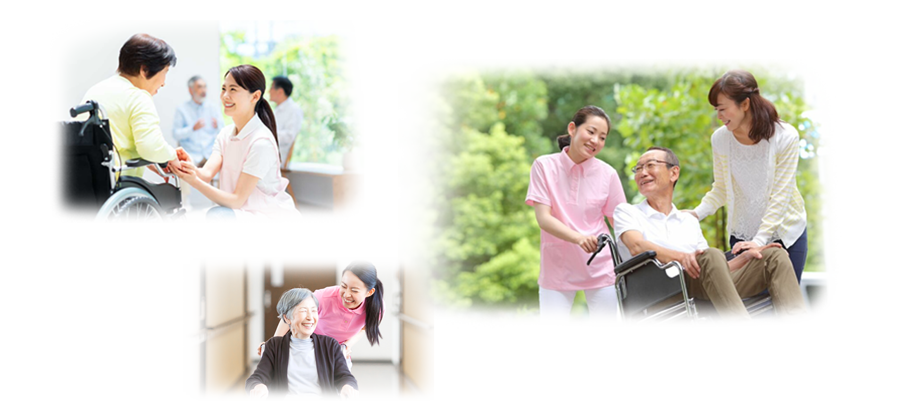

Program Pemagangan Care Worker ke Jepang

Persyaratan
- Wanita usia 18 - 35 tahun
- Sehat Jasmani dan rohani
- Membayar biaya pelatihan
- Pendidikan minimal SMK Kesehatan atau
D3/S1 Jurusan keperawatan / kebidanan /
kesehatan Masyarakat / Farmasi / Fisioterapi - Bersedia mengikuti pelatihan Bahasa Jepang Selama 6 Bulan
- Bersedia tidak mengundurkan diri
- apabila dinyatakan seleksi penempatan magang
- Mendapat izin orang tua.wali atau mengikuti pelatihan secara sadar atas kemauan pribadi tanpa paksaan orang lain
- Melampirkan salinan KTP / KK / Akta Kelahiran / Ijazah dan transkrip Nilai
Fasilitas